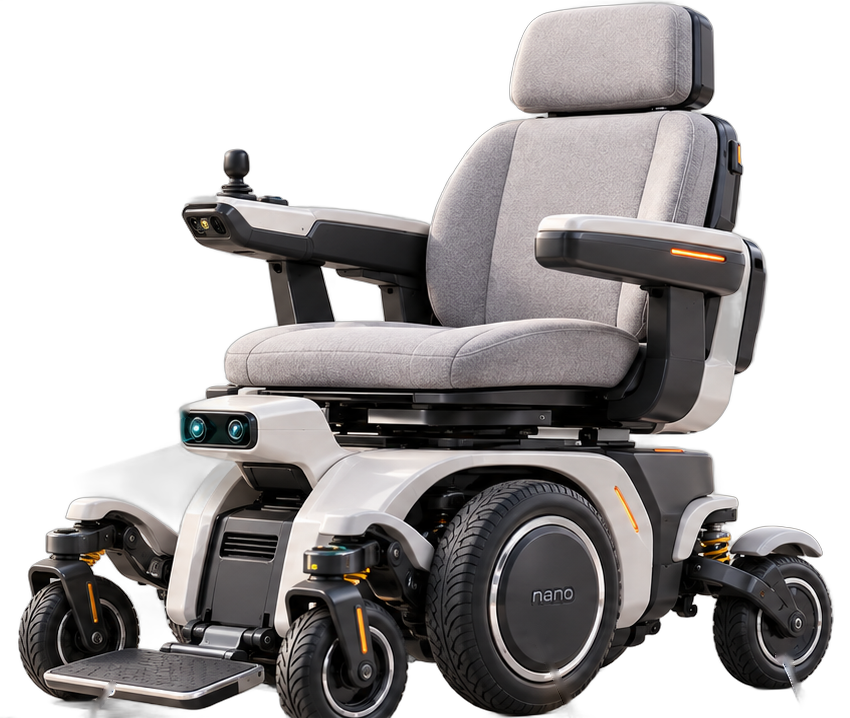

기업 미팅 결과와
과제 구체화
(주)다우테크놀로지 × 부릉부릉
팀장 박지원 | 강성우 · 백송현
미팅
진행 위치 · 개요
2단계 기업체 미팅 진행
슬라이드 3~4
기업 현황
제품 · 규정 · 사양
의료기기 기준 6 km/h, 25 km, 실내
슬라이드 5~6
문제와 과제
기존 제어의 한계 · 개선 과제
좌우 독립 제어, 슬립 피드백 부재
슬라이드 7~8
과제 · 계획
주제 · 시료 · 일정
탑승자 무게 반응 · 슬립 추종 제어
슬라이드 9~11
2
1. 진행 위치
1단계 검증을 마치고, 2단계 기업체 미팅 진행
1단계 · 가상 시가지 검증
6주차 완료
시나리오 5종 시뮬레이션 482회, BD60 BLDC 전기 파라미터 실측
기업 발표 자료(자율 안전 이동 플랫폼)로 정리해 미팅에서 공유
2단계 · 기업체 미팅으로 구체화
이번 발표 범위
기업 제품 · 규정 확인, 기존 제어의 한계와 개선 방향 논의
과제 주제 후보 도출, 시료 요청 준비
정리
시료와 과제 범위는 아직 확정 전, 다우 측 회의록을 받은 뒤 요구사항을 맞춰 회신
6주차 발표: week6.html · 기업 발표: index.html
3
1. 미팅 개요
다우테크놀로지 미팅에서 확인한 것
부릉부릉
발표 내용
자율 안전 이동 플랫폼 발표 · 영상
다우테크놀로지
기업 답변
제품 소개 · 실물 시연
방향: 의료기기보다 모빌리티
6바퀴 구조 위에 사람 외 수납형 등 다양한 상부
속도는 의료기기 기준 중심
관련 규정이 명확하지 않아 6 km/h 기준 유지 전망
참석자 명단 · 정식 회의록은 다우 측 송부 후 확인
4
회사
2010년 현 사명으로 출범 (자동차 부품 제조 기반)
품질 인증 · 의료기기 제조 인증 보유
2025년 100만 불 수출탑 수상
주요 수출처: 쉐보레, KG모빌리티, 현대
의료기기 사업부에서 모빌리티 개발
제품 라인업
나르샤 1500 보급형 휠체어, 판매 중
기능형 리클라이닝 가능 휠체어
자율주행 휠체어 인허가 진행 중
개발 중 경량형 신버전, 스마트 스쿠터 · IoT 휠체어
수동 휠체어 전동화 키트, 중국산 제품 수입 검토
미팅 발언 기준 · 정식 법인명과 수치는 회의록 수신 후 확인
5
25 km
의료기기 기준으로 동작해야 하는 거리
2024 · 2025
자율주행 휠체어 기준 제정 · 개정
정리
6주차 시뮬레이션 가정(6 km/h)이 기업 기준과 일치 → 그대로 이어 감
미팅 발언 기준 · 규정 원문과 외부 대조 전
6
→
좌 · 우 바퀴 독립 제어
한쪽 방향으로만 전달
→
바퀴 상태 피드백
없음 (슬립 · 마모 미반영)
부자연스러운 회피
장애물은 피하지만 움직임이 매끄럽지 않음
멈췄다 다시 가는 동작
사람 · 움직이는 물체를 만나면 정지 후 재출발
로봇청소기 · 배달로봇 방식
휠체어 전체가 아니라 바퀴 단위로 동작
마모로 인한 소음 · 유격
수년간 사용 후 기어 마모가 그대로 남음
미팅 중 시연 관찰과 발언 기준
7
3. 개선 과제
미팅에서 논의한 개선 과제 6가지
슬립 추종 · 최적 제어
슬립을 측정해 헛돌면 출력을 낮추고 빠져나옴
탑승자 무게 반응 가변 제어
무게에 따라 가속도 · 브레이크를 다르게
두 바퀴 연동 제어
좌우 바퀴를 함께 돌리고 휠 크기 · 폭을 반영
기어 마모 추종 제어
마모 · 유격을 추정해 제어에 반영, 고장 진단
구동시간 효율화
약 5시간에서 10~20%만 늘어도 경쟁력
시스템 통합
센서 · 임베디드 · 모터 드라이브 · PCB, 좌석 영역 제어
주제
어두운 칸 1 · 2번(슬립, 탑승자 무게)을 중심 과제로 잡을 예정
미팅 논의 기준 · 과제 주제는 기업과 협의 전
8
4. 과제 주제
중심 과제 2가지: 탑승자 무게 · 슬립
탑승자 무게 반응 제어
왜
가벼운 사람에게 무거운 사람 설정을 쓰면 가속이 과함. 탑승 중 무게가 갑자기 바뀌면 정해진 시간 안에 정지해야 하는 시험 기준도 있음
어떻게 (안)
같은 전류 · 토크에서 가속이 얼마나 나오는지로 하중 추정 → 가속도 · 제동 프로파일 가변
슬립 추종 제어
왜
지금은 누르는 대로 나가서 바퀴가 헛돌아도 계속 출력. 슬립을 없앨 수는 없고 적당한 수준으로 관리해야 함
어떻게 (안)
바퀴 회전과 실제 이동을 비교해 슬립 측정 → 중앙 제어로 올려 두 바퀴 출력 재배분 (폐루프)
연결
6주차 BD60 실측 모델(토크 상수 계산값)과 시뮬레이션 IMU를 출발점으로 활용
'왜'는 미팅 논의 · '어떻게'는 팀 검토안 (시료 확보 후 구체화)
9
4. 시료 요청
시료를 받아 모디파잉하는 방식으로 협업
요청 1
나르샤 1500
판매 중인 보급형 전동휠체어
요청 3
고장 · 폐기 부품
고장 또는 폐기 예정 부품
분해 · 개조 전제 명시
제공 시료는 분해 · 개조될 수 있음을 요청서에 명시
목적은 기능 개선
시료를 개조해 기능을 개선하는 협업
방식
수업 형태로 시료와 문제를 받아 분석 · 기능 개선 → 학기 말 결과 공유
시료 제공은 미팅에서 확정되지 않음 · 요청서에 과제 주제(무게 · 슬립)도 함께 기재
10
4. 향후 계획
회의록 → 요구사항 회신 → 시료 확인
회의록 수신
다우 측 회의록을 받아 내부 정리 내용과 대조
요구사항 회신
시료 요청 + 과제 주제(무게 · 슬립)를 함께 송부
시료 대기 (약 2주)
그동안 BD60 안정 회전 · 슬립 측정 방법 준비
아직 확정되지 않은 것
시료 제공 여부 · 범위, 예산 · 계약 · 기술 권리, 정부 사업 참여
일정은 다우 측 회의록 수신 시점에 따라 조정
11